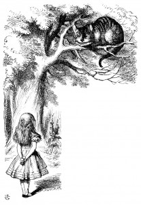

'--so long as I get SOMEWHERE,' Alice added as an explanation.
'Oh, you're sure to do that,' said the Cat, 'if you only walk long enough.'
Alice felt that this could not be denied, so she tried another question. 'What sort of people live about here?'
'In THAT direction,' the Cat said, waving its right paw round, 'lives a Hatter: and in THAT direction,' waving the other paw, 'lives a March Hare. Visit either you like: they're both mad.'
'But I don't want to go among mad people,' Alice remarked.
'Oh, you can't help that,' said the Cat: 'we're all mad here. I'm mad. You're mad.
'How do you know I'm mad?' said Alice.
'You must be,' said the Cat, 'or you wouldn't have come here.'
Alice didn't think that proved it at all; however, she went on 'And how
do you know that you're mad?'
'To begin with,' said the Cat, 'a dog's not mad. You grant that?'
'I suppose so,' said Alice.
'Well, then,' the Cat went on, 'you see, a dog growls when it's angry, and wags its tail when it's pleased. Now I growl when I'm pleased, and wag my tail when I'm angry. Therefore I'm mad.'
'I call it purring, not growling,' said Alice.
'Call it what you like,' said the Cat. 'Do you play croquet with the Queen to-day?'
'I should like it very much,' said Alice, 'but I haven't been invited yet.'
'You'll see me there,' said the Cat, and vanished.
Alice was not much surprised at this, she was getting so used to queer things happening. While she was looking at the place where it had been, it suddenly appeared again.
'By-the-bye, what became of the baby?' said the Cat. 'I'd nearly forgotten to ask.'
'It turned into a pig,' Alice quietly said, just as if it had come back